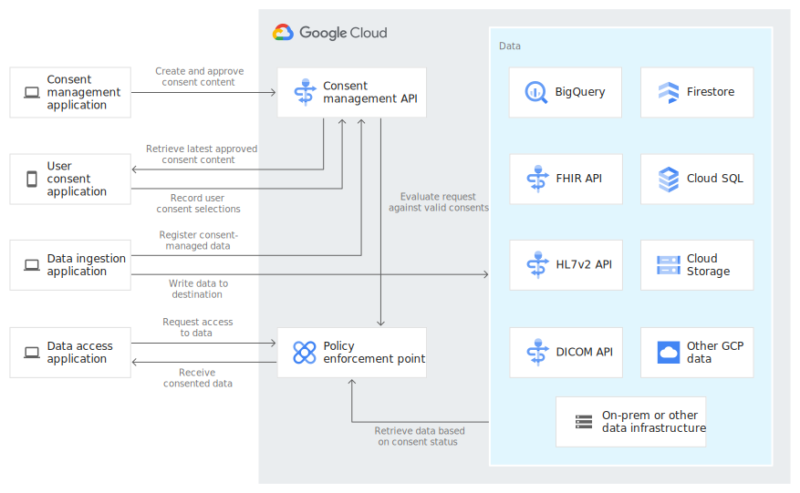

近日，谷歌云宣布将发布自己的医疗知情同意管理 API，以便为医疗应用开发者和临床研究员管理个体对健康数据使用的同意情况提供便利。医疗知情同意管理 API 是谷歌云平台（GCP）提供的云健康 API 的一部分。
在去年 4 月，云医疗 API 对公众开放后，医疗知情同意管理 API 是它最新加的一部分。另外，公司在 12 月添加了医疗自然语言 API 和医疗 AutoML 实体抽取功能。
去年秋天，云服务提供者发布了云医疗 API 的公开概览。随后，早期的使用者用这个 API 创造了个性化患者入口，在患者同意的基础上安全地将数据整合到了临床工作流中，并开发了虚拟临床试验功能。随着 COVID-19 的传播，医疗组织很快采纳了像虚拟保健和远程试验这样的概念，于是对患者同意的需求就变得更加显而易见，并且需要一个既简单又安全的通道。更何况，谷歌云医疗与生命科学（Google Cloud Healthcare & Life Sciences）的产品经理 Jameson Rogers 博士在谷歌云的博文中写道：
由血糖监测仪、可穿戴传感器、以及其他源带来的数据爆炸强调了患者的同意与隐私的重要性，毕竟患者和保健人员都希望能安全地从更多的源采集更多的数据，并将这些数据整合到他们的治疗计划当中。
随着医疗知情同意管理 API 的应用，开发者们可以很快开发出相关应用，让患者更好地追踪、编辑和撤回对自己数据使用的许可。进一步，有了患者的许可，相关数据就可以留存在谷歌云以备将来使用，比如临床试验的分析。

在公众云供应商中，谷歌并不是唯一提供医疗云服务的。例如，微软自 2019 年 11 月就开始为快速医疗互操作性资源（FHIR）提供 Azure API 作为一系列帮助客户就云中受保护的健康信息做机器学习的 API 的一部分。另外，AWS 提供医疗解释服务。这项服务利用机器学习，从杂乱的文本中提取相关的医疗信息。
谷歌云正在通过同意管理 API 来帮他们的服务走的更远。关于这一点，担任 Constellation Research 公司首席分析师兼副董事长的 Holger Mueller 告诉 InfoQ：
API 对企业来说是减少复杂度的一种很有力的方式，因为他们只需要正确使用 API 即可，至于运行在背后的复杂进程，就交给 API 来处理。医疗中的知情同意管理就是这些进程中的一员，它的特点是复杂性和组织性。很高兴看见谷歌这样的云供应商为企业提供了同意管理的 API 来支撑他们下一代的产品。这项举措降低了复杂度，同时节约了几百万棵树的纸张，和几个足球场那么大的原用于存储纸质同意意见表格的空间。
最后，想要使用这一医疗知情同意管理 API 的开发者们可以通过问题指南和文档来了解详细信息。云健康 API 的价格细节可以在定价页面查看。
如果发现译文存在错误或其他需要改进的地方，欢迎到 掘金翻译计划 对译文进行修改并 PR，也可获得相应奖励积分。文章开头的 本文永久链接 即为本文在 GitHub 上的 MarkDown 链接。
掘金翻译计划 是一个翻译优质互联网技术文章的社区，文章来源为 掘金 上的英文分享文章。内容覆盖 Android、iOS、前端、后端、区块链、产品、设计、人工智能等领域，想要查看更多优质译文请持续关注 掘金翻译计划、官方微博、知乎专栏。